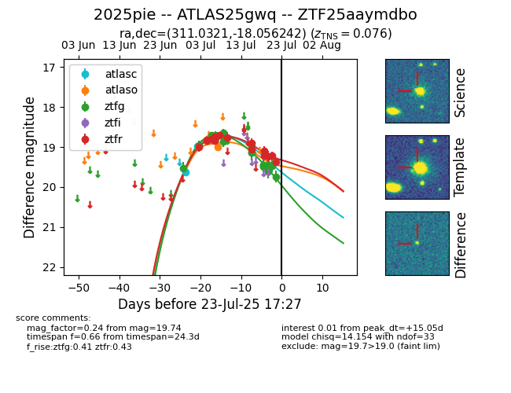

Target ZTF25aaymdbo at 2025-07-23 17:27, see:
FINK: fink-portal.org/ZTF25aaymdbo
Lasair: lasair-ztf.lsst.ac.uk/objects/ZTF25aaymdbo
ALeRCE: alerce.online/object/ZTF25aaymdbo
TNS: wis-tns.org/object/2025pie
YSE: ziggy.ucolick.org/yse/transient_detail/2025pie
alt names
ZTF25aaymdbo (ztf,fink)
2025pie (tns,yse)
ATLAS25gwq (atlas)
coordinates:
equatorial (ra, dec) = (311.0321,-18.05624)
galactic (l, b) = (28.0782,-32.74010)
photometry
last atlasc=18.98, atlaso=18.99, ztfg=19.74, ztfr=19.37
2 atlasc, 2 atlaso, 18 ztfg, 15 ztfr detections
